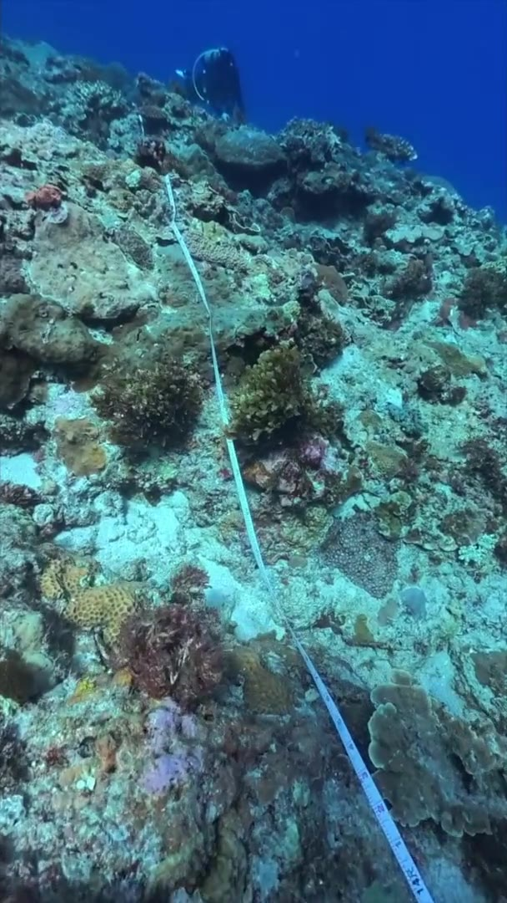

CORAL ECOPHYSIOLOGY
PARVIZ
TAVAKOLI-KOLOUR
Postdoctoral Researcher
Institute of Oceanography
National Taiwan University

ABOUT ME
Understanding how corals respond to a changing ocean
I am a coral ecophysiologist studying how environmental conditions shape coral physiology, symbiosis and resilience, and how these responses influence reef communities.
My research combines field observations, coral ecophysiology, experimental approaches and long-term ecological monitoring to investigate coral resilience, thermal stress, environmental memory, depth-related acclimation and reef health.
MORE ABOUT ME →RESEARCH
Research themes
My research explores coral responses to environmental variability from individual physiology to reef-scale ecological change.
Coral Ecophysiology
Understanding coral communities, bleaching, mortality and long-term reef change.
02Thermal Stress
Investigating coral physiology and thermal tolerance under present and future warming.
03Environmental Memory
Exploring how previous environmental exposure shapes responses to subsequent stress.
04Depth & Mesophotic Reefs
Examining acclimation across depth and the potential role of deeper reefs as refugia.
CORAL ECOPHYSIOLOGY
Environmental change.
Physiological responses.
- Temperature
- Thermal tolerance and bleaching
- Light & depth
- Photosynthesis and acclimation
- Environmental history
- Memory, recovery and resilience
FROM FIELD TO EXPERIMENT
Understanding the mechanisms behind coral resilience
I combine field observations with controlled experiments to investigate how temperature, light and environmental history affect coral physiology. My work connects bleaching, symbiosis and acclimation with the persistence of coral populations and reef communities.
EXPLORE MY RESEARCHPUBLICATIONS
Research publications
My publications cover coral physiology, thermal stress, environmental memory, mesophotic ecosystems, coral diseases, reef ecology and marine biodiversity.
VIEW PUBLICATIONS →